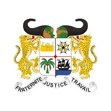
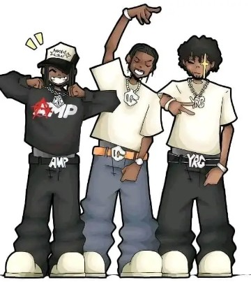

|
|
BIENVENUE SUR MA PLATEFORME
|

|
-Nom:GUISSIDA
-Prenom:Akim
-Age:18ans
-Contact:0147727175

1-CEP
2-BEPC
3-BAC
Je me nomme GUISSIDA Akim, je suis né le 15 novembre 2006 à Bassila.. Je suis actuellement etudiant en System Informatique et Logiciel (SIL) à ES Faucon. Je suis dynamique,curieuxet toujours pret à appre,dre de nouvelles choses.Je suis originaire du Benin,un pays riche en culture et en talents.J'ai un grand interet pour l'informatique et le disign web et les outils numerique.Je suis egalement attiré par le sport notamment le football ,que je pratique regulièrement. Creatif et motivé,je cherche constamment à ameliorer mes competencess.J'aime travailler en equipe et partager mes idées avec les autres. Mon objectif est de construire une carrière solide dans le domaine du numerique. Je suis aussi tres actif sur les reseaux sociaux ou je partage mes passions. Ma devise: Travailler dur en silence,et laisser le succès faire le bruit.